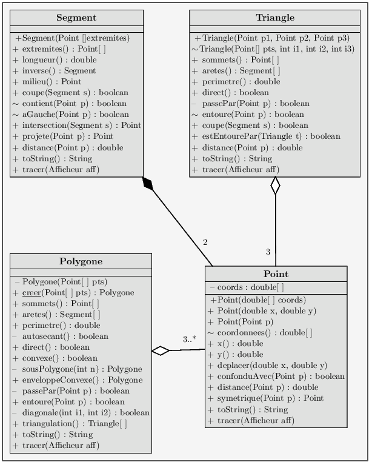

ACD1 - Canevas du TP 3 : Encapsulation
L'objectif du TP est de s'entraîner à l'utilisation et
à la réalisation d'un paquetage. L'application
retenue porte sur des traitements de formes géométriques
simples (points, segments droits, triangles et polygones).
On commencera par réaliser une classe Point en
binôme. Puis chaque membre du binôme travaillera
séparément sur la classe Segment et sur la
classe Triangle. Le binôme se réunira enfin
pour travailler sur la classe Polygone.
Attention, vous n'êtes pas sensés être experts
mathématiciens ou graphistes. Tous les services
mathématiques ou graphiques dont vous avez besoin pour
répondre aux questions seront demandés à des
instances des classes du paquetage geodessin à l'aide
du mot-clé import. Veiller à n'importer
que ce qui est effectivement utile à la classe
développée.
- L'archive à remettre à la fin du TP (format ZIP,
TAR ou TGZ uniquement) comportera uniquement :
- - le compte-rendu (versions ODT + PDF),
- - un répertoire polygones avec les fichiers sources
(.java) réalisés, y compris les tests,
- - la documentation javadoc du paquetage obtenue par la commande :
javadoc -d doc -private -docencoding ISO-8859-1 polygones/*.java
- - le paquetage polygones.jar contenant les classes
exécutables par une JVM, obtenu par la commande :
jar cvf polygones.jar polygones/*.class
Attention : les classes obtenues devront être
conservées pour les TP suivants (TP4 et TP6).
L'évaluation du TP portera plus sur la qualité de
développement (propreté du code, documentation Javadoc,
méthodologie de tests) que sur la quantité de
fonctionnalités fournies.
Les méthodes devront systématiquement être
testées en comparant la réponse fournie avec des
valeurs test, et en effectuant des vérifications graphiques
s'appuyant sur les services de la classe Afficheur.
Penser à bien lire la documentation de la classe
Afficheur pour la faire fonctionner.
Les tests doivent être lancés depuis des classes de test.
Les sources Java des classes de test devront être fournis
en fin de TP, dans l'archive à rendre.
- Au minimum, le compte-rendu (un par binôme) doit :
- - rappeler le thème principal du TP,
- - préciser ce qui a été réalisé
dans le TP,
- - expliquer la gestion des paquetages dans ce TP (utilisation,
réalisation),
- - expliquer la notion d'encapsulation, illustrée sur
des exemples issus du TP,
- - expliquer la mise en oeuvre de l'agrégation et de la
composition forte au travers d'exemples issus du TP,
- - expliquer comment se servir de la classe Afficheur
pour procéder aux vérifications graphiques.
Travail à réaliser
Si ce n'est pas déjà fait, extraire de l'archive
acd1tp4.tgz le paquetage geodessin.jar dont la
documentation est (aussi) accessible
ici.

Bien que les classes à réaliser portent sur des objets
géométriques, toute la partie mathématique
devra être déléguée au paquetage
geodessin.geo. Vous ne devrez pas toucher aux maths.
Même des fonctions simples, comme le calcul de la distance
entre deux points ou vérifier que deux points sont confondus,
devront être déléguées.
L'objectif est de réaliser un nouveau paquetage
polygones.jar composé des classes du diagramme UML
ci-dessus. Pour cela, les fichiers java devront être
placés dans un répertoire de même nom que le
paquetage, et après l'en-tête de fichier, on doit
trouver l'instruction :
package polygones;
Pour que le paquetage geodessin soit trouvé à
la compilation et à l'exécution, il faudra commencer
par mettre à jour la variable d'environnement CLASSPATH
à l'aide de la commande :
export CLASSPATH=$CLASSPATH:"CHEMIN"/geodessin.jar
dans laquelle "CHEMIN" correspond au chemin absolu depuis la
racine vers le fichier geodessin.jar.
Les fichiers sources devront être compilés depuis le
répertoire supérieur, par exemple, avec la commande :
javac polygones/Point.java.
Recommandations générales :
- Veiller à bien respecter la syntaxe du diagramme UML
(intitulé des attributs et méthodes, types de
composition, cardinalités).
- Pour les compositions fortes, s'assurer qu'on ne puisse
jamais accéder depuis l'extérieur de la classe aux
composants (faire des copies en entrée et en sortie).
- Penser à trouver un constructeur principal
pertinent pour chaque classe.
- Pour la réalisation des tests géométriques,
s'appuyer sur les services de la classe Geometre.
En particulier, cette classe utilise une valeur de granularité
pour les comparaisons de valeurs réelles. Pour réaliser
des tests, une valeur de 0.01 est judicieuse.
- Il faudra s'assurer que les conversions en chaîne de
caractères proposent un format bien adapté à
une intégration dans tout type de messages.
Recommandations pour la classe Point :
- Dans le constructeur par recopie et dans l'accesseur fournissant
les coordonnées, les coordonnées du point doivent
être recopiées.
- Le point symétrique de P autour du centre C
peut être trouvé en parcourant le double du chemin
de P à C.
Recommandations pour la classe Segment :
- Attention : l'intersection entre les droites support des
segments n'est pas nécessairement sur les deux segments.
- L'inverse du segment AB est le segment BA.
- Le test coupe vérifie si 2 segments se coupent.
- Le test contient vérifie si le point en
paramètre appartient au segment, extrémités
y-comprises.
- Le test aGauche vérifie si le point en
paramètre est situé strictement sur la gauche du
segment en le parcourant du point de départ au point
d'arrivée (le point n'est pas sur le segment).
Recommandations pour la classe Triangle :
- Le constructeur avec un tableau de points et trois entiers en
paramètres construit un triangle dont les sommets sont
les points du tableau indexés par les trois entiers.
- Le test direct vérifie si les sommets sont
spécifiés dans le sens trigonométrique direct
(inverse des aiguilles d'une montre vosgienne).
- Le test passePar vérifie si le point en
paramètre est sur le périmètre du triangle.
- Le test entoure vérifie si le point en
paramètre est strictement à l'intérieur du
triangle (périmètre exclus); pour cela, il suffit de
vérifier que le point est toujours du même
côté de chaque arête.
Quelques précisions sur les polygones :
- Les polygones sont définis par une liste ordonnée de
sommets.
- On ne doit pas pouvoir construire de polygone auto-sécant,
à savoir un polygone comportant des arêtes qui se
coupent (test prélable à toute construction).
- Le périmètre du polygone relie successivement
chaque sommet pris consécutivement dans la liste.
- Les arêtes doivent être listées dans le
même sens que les sommets, en respectant le sens de
parcours.
- Une diagonale du polygone est un segment reliant deux sommets sans
franchir le périmètre du polygone et entièrement
contenu à l'intérieur du polygone.
- Un polygone convexe est tel que l'angle entre deux arêtes
successives est toujours de même signe.
- L'enveloppe convexe est la forme définie par un
élastique entourant le polygone.
- La triangulation est une décomposition du polygone en
triangles sans recouvrement (l'intersection entre chaque triangle
est au mieux une arête).
Recommandations pour la classe Polygone :
- Le test direct vérifie si les sommets sont
spécifiés dans le sens trigonométrique direct
(inverse des aiguilles d'une horloge normande).
- Le test autosécant vérifie si le polygone
a des arêtes qui se croisent.
- L'accesseur sousPolygone retourne une copie du polygone
dont on a retranché un sommet (celui dont l'index est fourni
en paramètre).
- Pour le test entoure, si le polygone est convexe,
vérifier que le point est toujours du même
côté de chaque arête.
Dans le cas d'un polygone non-convexe, on compte le nombre
d'intersections
entre une demi-droite issue du point fourni avec le
périmètre, et on vérifie que ce nombre est
impair. Attention, le cas des sommets situés sur la
demi-droite est délicat à traiter.
- Pour la triangulation d'un polygone convexe, tourner autour de
n'importe quel sommet du polygone en formant des triangles avec ce
sommet et deux autres sommets consécutifs.
Dans le cas d'un polygone non-convexe, on tourne autour du polygone
en testant chaque sommet. Si le segment reliant le sommet
précédent et le sommet suivant est une diagonale, on
a un triangle que l'on peut retrancher du polygone. Sinon, on passe
au sommet suivant. On procède de la sorte de sommet en sommet
jusqu'à ne plus avoir que trois sommets à traiter
(le dernier triangle).
{kind=link}